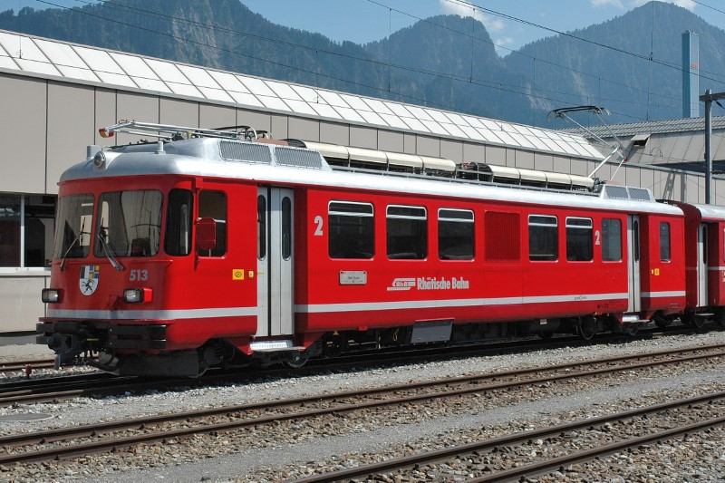

Allgemein
| Baujahr | 1971 |
| Einsatz | StN |
| Antriebstechnik | Thyristor-Anschnittsteuerung |
| Leistung | 1060 PS / 780 kW |
| Elektrische Bremse | Bremswiderstände / Rekuperation |
Technische Daten
| Geschwindigkeit | 90 km/h |
| Länge | 18.70 m |
| Gewicht (Tara / Burtto) | 45 t / 48 t |
| Bremsgewicht | 45 t |
| Feststellbremse | H 22 kN (H 22 t) |
Fahrzeugausrüstung
| Zug-/ Stossvorrichtung | Automatische Kupplung (G+F) |
| Vielfachsteuerung | in automatischer Kupplung |
| Zugsicherung | ZSI 90 |
| Heizleitung | nur Vorheizen |
| Speiseluft-Leitung | ja |
| Bremssystem | Druckluftbremse |
| LBT-Leitung | nein |
| Türen | pneumatisch |
| Notfalleinrichtung | NBA blau |
Fahrgastausstattung
| Plätze 1. Klasse | keine |
| Plätze 2. Klasse | 40 |
| Klappsitze | 8 |
| Niederflureinstiege | keine |
| Rollstuhlplätze | keine |
| WC | 1x offen |
| Velohaken | keine |
| Fahrgastinfosystem | Manuelle Railvox (zurzeit ausser Funktion) |
| Zugzielanzeigen | keine |
| Fahrgastzählung | AFZ (Be 4/4 511 - 512) |